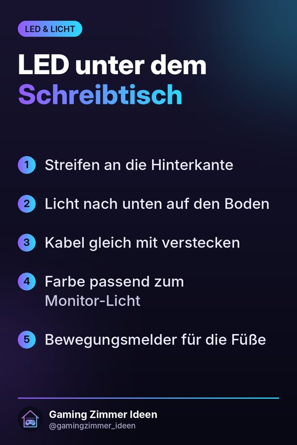

Ideen › LED Beleuchtung Gaming Zimmer
LED unter dem Schreibtisch: 5 Tipps für den Schwebe-Effekt

LED unter dem Schreibtisch lässt dein Setup schweben: Kleb den Streifen an die Hinterkante, lass das Licht nach unten auf den Boden fallen, versteck die Kabel gleich mit, wähle die Farbe passend zum Monitor-Licht und nimm einen Bewegungsmelder für die Füße.
Auf einen Blick
- Streifen an die Hinterkante
- Licht nach unten auf den Boden
- Kabel gleich mit verstecken
- Farbe passend zum Monitor-Licht
- Bewegungsmelder für die Füße
Tipp: Wenn du schon unter dem Tisch klebst, montiere direkt einen Kabelkanal mit – dann ist alles in einem Schritt erledigt.